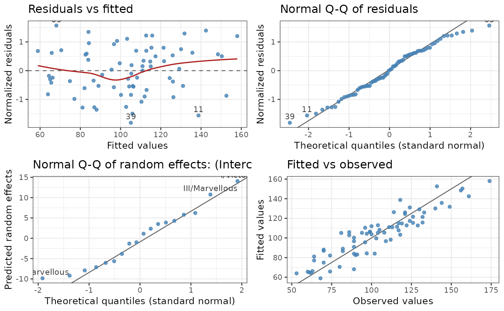
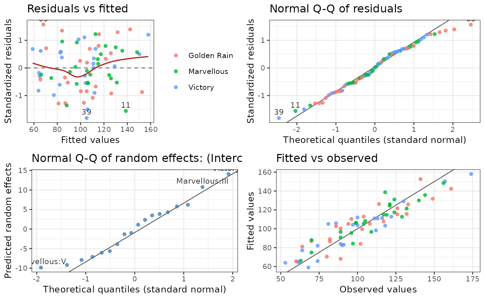
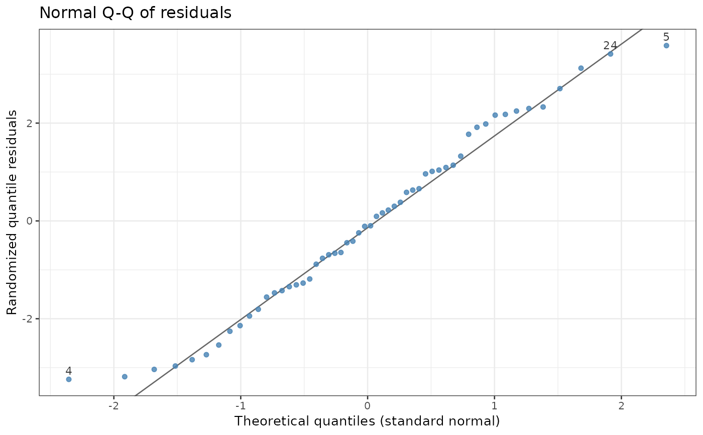

Four diagnostic plots, drawn with ggplot2, for any model that predictmeans handles: lm,
aov (also with Error() strata), glm, gls, lme, lmer, glmer,
glmmTMB, mgcv::gam, semireg fits, and other classes with fitted() and
residuals() methods. With interactive = TRUE they are shown with plotly: hovering a point gives
its row of the data.
Usage
residplot(model, group = "none", level = 1, slope = FALSE, id = 3, newwd = FALSE,
ask = FALSE, interactive = FALSE, plot = TRUE)Arguments
- model
A fitted model (see Description).
- group
Optional variable that colours the points: the name (in "quotes") of a variable in the data of the model, or a vector with one value per observation. The default
"none"uses one colour.- level
For mixed models: which random-effect term the random-effect plot shows, 1, 2, ... (in the order of
ranef(): forlmethe outermost grouping first, forlmerthe innermost first).- slope
For mixed models:
TRUEplots the random slopes (the second column of the random effects) instead of the random intercepts.- id
Number of the most extreme points labelled with their row names (largest absolute residuals; for the Cook's distance plot the largest distances);
FALSEor 0 labels none. In 1.xid = TRUElet you click on points; nowTRUElabels 3 points, andinteractive = TRUEshows every point's row name.- newwd
Open a new graphics device first.
- ask
TRUE: draw the plots one per page, asking before each new page (interactive sessions).- interactive
TRUE: show the plots with plotly (plotly::ggplotly()), which must be installed.- plot
FALSE: do not draw; only return the plots.
Value
Invisibly, a list of the four ggplot objects (class "pm_residplot"), with attribute "data":
the data frame of the points (row label, fitted, residual, observed values, group). With interactive = TRUE,
the plotly widget.
Details
The plots:
Residuals against fitted values, with a loess smooth: look for trends (a missing term, a wrong link) and for spread that changes with the fitted values.
Normal Q-Q plot of the residuals: the points should lie near the line.
Mixed models: normal Q-Q plot of the random effects of term
level.gls: autocorrelation of the normalized residuals (with approximate 95% limits). Other models: square root of the absolute residuals against fitted values (scale-location), for spread that changes with the fitted values.lm,aovandglm: Cook's distances. Other models: fitted against observed values; for a 0/1 response, the observed proportion against the mean fitted probability in tenths of the fitted values (calibration).
Residuals: standardized for lm (rstandard()), normalized for gls and lme (the
correlation structure removed), scaled by the residual standard deviation for lmer. For Poisson, binomial and
negative binomial models (glm, glmer, glmmTMB, gam) randomized quantile residuals
(Dunn and Smyth, 1996): exactly normal when the model is right, so plots 1 and 2 are read as for a normal model
(they use a fixed random seed, so the plots do not change between calls); fitted values are then on the link
scale. Other families: standardized deviance residuals. aov with Error(): the residuals of the lowest
stratum. The plots inform; they do not test. For a summary of checks, see also CookD.
References
Dunn, P. K. and Smyth, G. K. (1996), Randomized quantile residuals, Journal of Computational and Graphical Statistics, 5, 236-244.
Examples
library(predictmeans)
Oats$nitro <- factor(Oats$nitro)
fm <- lme(yield ~ nitro*Variety, random=~1|Block/Variety, data=Oats)
residplot(fm, level=2) # lme: level=2 for random effect "Block:Variety"

fm <- lmer(yield ~ nitro*Variety+(1|Block/Variety), data=Oats)
residplot(fm, group = "Variety") # lmer: level=1 for random effect "Block:Variety"

# a Poisson GLM: randomized quantile residuals
gm <- glm(breaks ~ wool * tension, family = poisson, data = warpbreaks)
p <- residplot(gm, plot = FALSE)
p[[2]] # one of the plots

# interactive plots (hover for each point's row)
if (interactive() && requireNamespace("plotly", quietly = TRUE)) residplot(fm, interactive = TRUE)